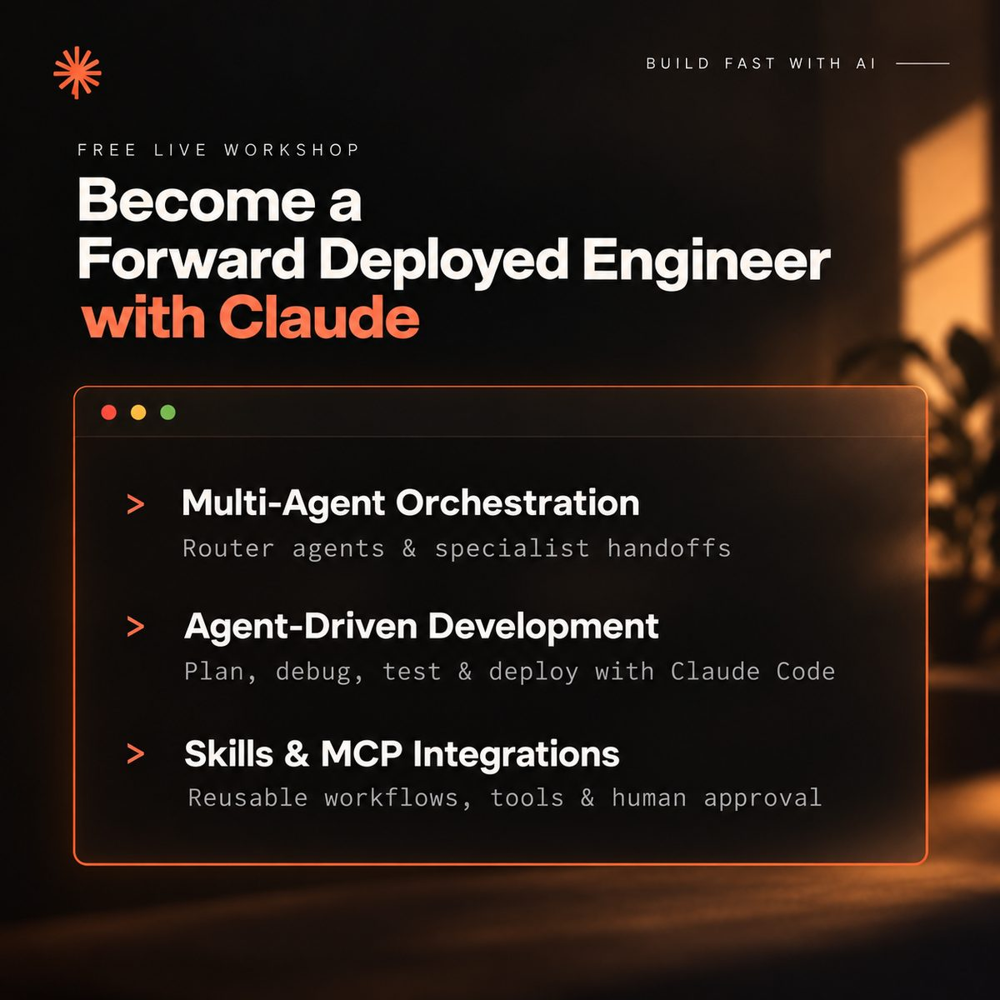

今日舉行
成為 Claude Forward Deployed Engineer（現場建 AI Agent）
Become a Forward Deployed Engineer with Claude
90 分鐘免費線上工作坊，現場用 Claude Code 建立可運行的多代理系統：編排器路由、Skills、MCP 連接器，以及編程代理驅動開發。適合軟件／數據工程師同想轉做 Forward Deployed Engineer 的人。
官方 API 時區為 Asia/Kolkata（07:30 IST＝澳門 10:00）。旁聽免費；跟做可能需自備 Claude Code 或 API 用量。頁面另有付費課程 waitlist，與本場免費工作坊分開。
官方連結 →